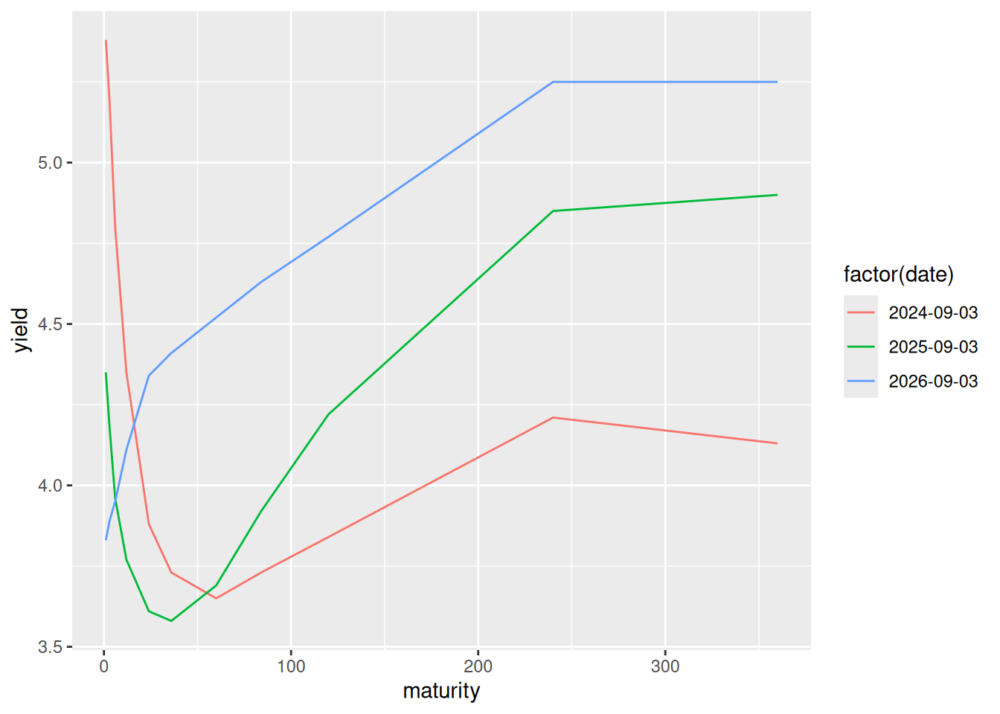
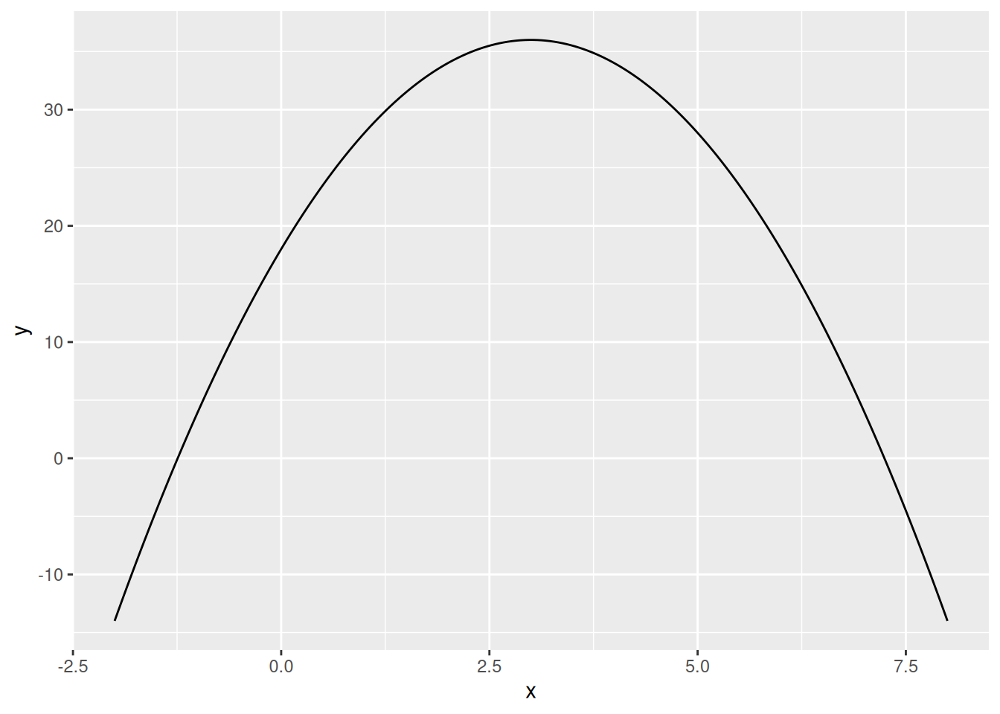

((5/6) + log(27, base = 3)) / sqrt(7)[1] 1.448864
Download the following Excel file:
The file contains the total number of units sold per day for a company’s 10 products in September. Using a pivot table, obtain the total units sold for each product over the whole month. What is the product ID of the product which sold the most units?
Answer: 3.
To do this, select the table of data, add a pivot table, select the variables product id and sales, put product id on the rows, and the values should, by default, be the sum of sales by product ID. You can then sort this table by the sum of sales to see which product had the most sales.
Download the following Excel file:
sales-report-week-40-2026.xlsx
The file contains:
You want the price of the corresponding product as a new column in Sheet 1. You will add this to column D using the VLOOKUP function.
Write in each box below the 4 arguments you would give to the VLOOKUP function in cell D2. Write each argument such that you can copy and paste the formula to cells D3 to D43.
Answer:
B2Sheet2!$A$2:$B$7 (leaving out the dollar symbol in front of A and B would be okay, but they are required in front of 2 and 7)Write an R command that calculates the following: \frac{\frac{5}{6} + \log_3\left(27\right)}{\sqrt{7}}
Provide both the numerical answer and the R command in the boxes below.
Answer: The R command:
((5/6) + log(27, base = 3)) / sqrt(7)[1] 1.448864The numerical answer: 1.448864.
Write an R command in the box below that generates a sequence of 15 evenly-spaced values starting from -2 and ending in 5.
Your answer must use a sequence-generating function. It is not permitted to write out the full vector manually.
Answer:
seq(from = -2, to = 5, length.out = 15) [1] -2.0 -1.5 -1.0 -0.5 0.0 0.5 1.0 1.5 2.0 2.5 3.0 3.5 4.0 4.5 5.0Consider the following 2 vectors:
products <- c("Lamp", "Chair", "Shelf", "Desk")
featured_products <- c("Chair", "Desk", "Sofa")Write an R command using the %in% operator that returns the elements of products that are contained in the vector featured_products. The code you provide in your answer does not need to include the two lines above.
The output of your command should be [1] "Chair" "Desk".
Answer:
products[products %in% featured_products][1] "Chair" "Desk" Define x as follows:
x <- c(-3, 0, 8, -1, 5)Write an R command in the box below with two nested uses of the ifelse() function that takes x as input and returns as output a character vector with:
"positive" whenever x is greater than zero."negative" whenever x is less than zero."zero" whenever x equals zero.The output of your command should be [1] "negative" "zero" "positive" "negative" "positive".
Answer:
ifelse(x > 0, "positive", ifelse(x < 0, "negative", "zero"))[1] "negative" "zero" "positive" "negative" "positive"Download the following dataset: yield-curves.csv. The data contain information on US treasury yields at different maturities (durations of the bonds) from the 3rd of September in 2024, 2025, and 2026. The data were obtained from the Federal Reserve Bank of St. Louis FRED Interface.
The variable descriptions are as follows.
date: The date in month/day/year format.term: The maturity/duration of the security. This is in months if the duration variable equals month(s) and is in years if the duration variable equals year(s).duration: Either year(s) or month(s) and describes whether the term variable is measured in years or months.yield: The annualized return on the security.For example, the first observation in the data tells us that the yield on a 1-year bond on 3 September 2024 was 4.35%.
When reading the dataset into R, assign it to df.
df <- read.csv("yield-curves.csv")Write an R command in the box below that will convert the date variable to an R date.
Answer:
df$date <- as.Date(df$date, format = "%m/%d/%y")Write an R command in the box below that will create a new variable called maturity which is the maturity/duration of the security measured in months. For example:
term is 1 and duration is month(s), then maturity should equal 1.term is 2 and duration is month(s), then maturity should equal 2.term is 1 and duration is year(s), then maturity should equal 12.term is 2 and duration is year(s), then maturity should equal 24.Answer:
df$maturity <- ifelse(df$duration == "year(s)", df$term * 12, df$term)Write an R command in the box below that will keep only the variables date, maturity and yield, dropping the variables term and duration.
Your output should match the following dataset: yield-curves-cleaned.csv.
Answer:
df <- df[, c("date", "maturity", "yield")]Write an R command in the box below that returns the average of the yield variable in the dataset.
Note: If you weren’t able to complete the previous cleaning steps, use the following dataset to do this question: yield-curves-cleaned.csv.
Answer:
mean(df$yield)[1] 4.268788Write an R command in the box below using the max() function that returns the maximum yield with a 12-month maturity in the dataset.
Answer:
max(df$yield[df$maturity == 12])[1] 4.35Write an R command in the box below using the aggregate() function that returns the average of the yield variable by date.
Your output should be the following:
date yield
1 2024-09-03 4.262727
2 2025-09-03 4.093636
3 2026-09-03 4.450000Answer:
aggregate(yield ~ date, FUN = mean, data = df) date yield
1 2024-09-03 4.262727
2 2025-09-03 4.093636
3 2026-09-03 4.450000Use the package ggplot2 to create a plot with 3 yield curves, one for 2024, 2025, and 2026. A yield curve shows the yield at different maturities at the same point in time.
Here is the approach you should follow:
maturity on the horizontal axis.yield on the vertical axis.factor(date).geom_line() layer to the plot.Choose the answer which best describes what can be seen in this plot:
Answer:
Following the steps:
library(ggplot2)
ggplot(df, aes(maturity, yield, color = factor(date))) + geom_line()
In 2026, the yield never decreases in maturity. In 2025 the yield first decreases in maturity then increases.
Assuming the reshape2 package has already been loaded with library(reshape2), write an R command in the box below to reshape the data from long to wide format. Here, rows should represent maturities, columns should represent dates, and the values should be the yields. Call this wide dataset wide.
Your data frame wide from your command should be the following:
maturity 2024-09-03 2025-09-03 2026-09-03
1 1 5.38 4.35 3.83
2 3 5.19 4.18 3.89
3 6 4.80 3.96 3.95
4 12 4.35 3.77 4.11
5 24 3.88 3.61 4.34
6 36 3.73 3.58 4.41
7 60 3.65 3.69 4.52
8 84 3.73 3.92 4.63
9 120 3.84 4.22 4.77
10 240 4.21 4.85 5.25
11 360 4.13 4.90 5.25Answer:
wide <- dcast(df, maturity ~ date, value.var = "yield")Use the data frame wide to calculate a new variable called change_2026 which is, for each maturity, the yield on 3 September 2026 minus the yield on 3 September 2025. The output of wide$change_2026 should equal:
[1] -0.52 -0.29 -0.01 0.34 0.73 0.83 0.83 0.71 0.55 0.40 0.35Provide the R command to create this variable in the box below.
Hint: Use indexing to extract the necessary columns from wide.
Note: If you weren’t able to complete the previous reshaping step, use the following dataset to do this question: yield-curves-wide.csv.
Answer:
wide$change_2026 <- wide[, 4] - wide[, 3]The following two questions involve the mathematical function defined over all real numbers x:
f(x) = 18 + 12x - 2x^2
Plot the function between the x values -2 and +8. Select or enter the correct options in the boxes below that best describe the plot.
Part (a): The shape of the function is a straight line / flat / U-shaped / inverse U-shaped.
Part (b): When f(x) = 34, the corresponding values of x are \_\_\_ and \_\_\_ (the answers are whole numbers).
Part (c): At x=5, the function is downward-sloping / flat / upward-sloping / vertical.
Answer:
f <- function(x) {
18 + 12 * x - 2*x^2
}
x <- seq(-2, 8, length.out = 200)
plot_df <- data.frame(x = x, y = f(x))
ggplot(plot_df, aes(x, y)) + geom_line()
Use R to find the value of x at which this function reaches its maximum. You may restrict your search over the interval [-2,8].
Part (a): Type this value of x in the box below.
Part (b): What is the maximum value of the function?
Answer:
optimize(f, interval = c(-2, 8), maximum = TRUE)$maximum
[1] 3
$objective
[1] 36